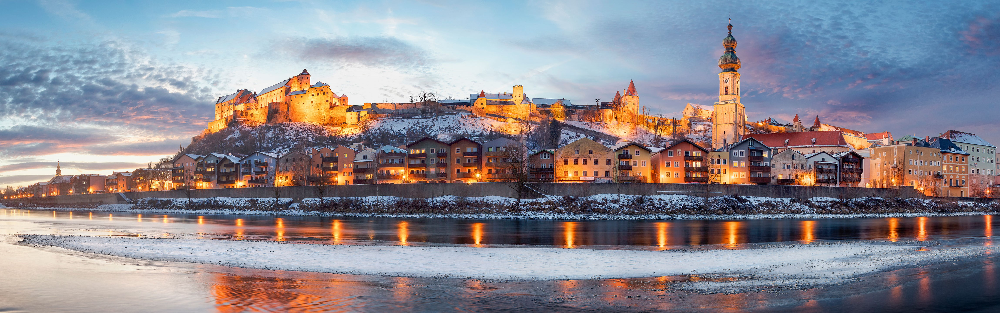

Aleman Sencillo / Einfaches Deutsch
Inicio
Idioma
Costumbres
Geografia
Comidas
Bienvenido a Aleman Sencillo

El castillo de Burghausen (en alemán, Burg zu Burghausen) es un castillo ubicado en la localidad de Burghausen, Alta Baviera, Alemania